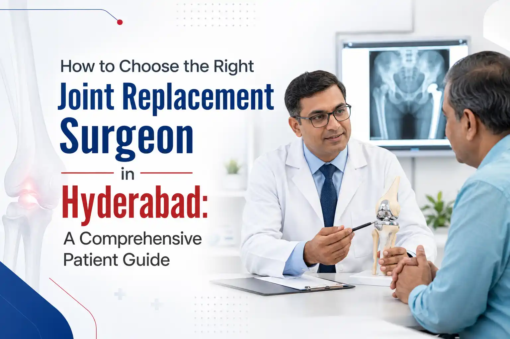

Medically Reviewed by
DR. MIR JAWAD ZAR KHANMBBS, MS - Orthopedic
M.CH-(Ortho) Joint
Replacement surgeon
How to Choose the Right Joint Replacement Surgeon in Hyderabad: A Comprehensive Patient Guide
The decision to undergo joint replacement surgery is often a significant turning point in a person's life. Whether it is severe, bone-on-bone osteoarthritis making it impossible to walk down the street, or a degenerative joint disease that has stolen your ability to climb stairs, chronic pain can severely narrow your world. When conservative treatments like physical therapy and medication no longer provide relief, finding a qualified joint replacement surgeon in Hyderabad becomes your highest priority.
Opting for surgery can bring up a natural mix of anxiety and hope. You hope to walk without pain, return to your daily routines, and regain your independence. At the same time, it is normal to worry about the risks, the recovery timeline, and the success of the procedure. The single most critical factor that determines your surgical outcome, long-term mobility, and overall peace of mind is the specialist you choose to perform the operation.
Hyderabad has grown into a major healthcare hub, offering some of the most advanced medical facilities in the country. However, the sheer number of hospitals and specialists can make the selection process feel overwhelming for patients and their families. This comprehensive guide, built on clinical insights and strategic patient care principles, will outline the exact step-by-step framework you need to identify, evaluate, and choose the ideal joint replacement surgeon Hyderabad for your specific needs.
Why Choosing the Right Surgeon Shapes Your Entire Recovery
Joint replacement, whether a total knee arthroplasty (TKR) or a total hip arthroplasty (THA), is a highly precise procedure. It requires not just deep medical knowledge, but also exceptional manual dexterity, alignment accuracy, and an understanding of advanced biomechanics.
When you choose a highly specialized surgeon, you are significantly reducing the risk of common post-operative complications such as joint misalignment, implant instability, infection, or premature wear of the prosthetic components. Furthermore, experienced surgeons are deeply well-versed in muscle-sparing techniques and minimally invasive joint surgery, which often result in less blood loss, lower post-operative pain scores, and a much faster return to your routine activities.
Step 1: Verify Core Credentials and Specialized Fellowship Training
Every orthopedic surgeon goes through basic training to treat fractures and general musculoskeletal issues. However, joint replacement is a specialized sub-discipline. You must ensure that the doctor you choose has gone beyond general orthopedics to master adult joint reconstruction.
Key Professional Indicators to Look For:
- Board Certification and Advanced Degrees: Ensure the doctor holds recognized post-graduate degrees such as an MS (Master of Surgery) in Orthopedics or a DNB (Diplomate of National Board), along with valid medical council registrations.
- Fellowship Training: A "Fellowship" is a rigorous period of dedicated training that a surgeon undertakes after their residency, focusing exclusively on a single specialty. Look for a surgeon who has completed dedicated fellowships in Joint Reconstruction, Adult Reconstructive Surgery, or Total Joint Arthroplasty from reputable national or international medical institutions.
- Continuous Medical Education (CME): The field of orthopedics evolves rapidly. The best specialists regularly participate in global conferences, publish research, and train on the latest robotic and computer-navigated surgical systems.
Step 2: Evaluate Surgical Volume and Hands-On Experience
In surgical medicine, there is a direct and proven correlation between a surgeon's volume of procedures and patient outcomes. Put simply: the more frequently a doctor performs a specific surgery, the better their results tend to be.
When scheduling an initial consultation, do not hesitate to ask the doctor direct questions about their practical experience. A reputable and empathetic specialist will always welcome these questions:
- How many joint replacement surgeries do you perform each year?
- A high-volume surgeon typically performs 100+ joint replacements annually.
- What is your specific success rate, and what is your personal complication rate for this exact procedure?
- How do you manage unexpected intra-operative complications if they arise?
Choosing a seasoned expert ensures that your surgeon has encountered a vast array of anatomical variations and complex joint deformities, giving them the insight needed to make real-time, accurate adjustments during your operation.
Step 3: Investigate the Hospital's Infrastructure and Technology
A surgeon does not work in a vacuum. The success of your joint replacement also depends heavily on the ecosystem where the surgery takes place. When searching for a top joint replacement hospital Hyderabad, evaluate the clinical environment carefully.
Crucial Facility Requirements:
- Dedicated Orthopedic Operating Theatres: The operating room must feature absolute sterile environments, such as laminar airflow systems, to minimize the risk of deep joint infections.
- Advanced Surgical Technology: Check if the hospital is equipped with modern diagnostic tools, high-definition imaging, computer-assisted navigation systems, or robotic-assisted surgical platforms that maximize implant placement precision.
- Robust Intensive Care and Support: A premier hospital will feature a fully staffed Intensive Care Unit (ICU), exceptional anesthesia teams specializing in nerve blocks for post-op pain management, and dedicated inpatient orthopedic wards.
- Integrated Physical Therapy Teams: True recovery happens after the operation. Having an in-house team of physical therapists who work directly alongside your surgeon ensures a seamless, structured rehabilitation plan from day one.
Step 4: Assess Communication Style, Empathy, and Patient Rapport
Brilliant technical skill can be undermined if a doctor does not communicate clearly or listen to your concerns. Joint replacement is a collaborative journey that requires trust between the patient, the medical team, and family members.
Pay close attention to how the surgeon and their clinical staff interact with you during your initial consultation:
- Do they listen patiently? Do they allow you to fully describe how your joint pain limits your daily life, or do they rush you through the appointment?
- Do they explain things clearly? A true expert can explain complex medical concepts, implant types, and surgical steps using simple, everyday language without relying heavily on confusing medical jargon.
- Are they transparent about risks? No surgery is entirely risk-free. A trustworthy specialist will be completely honest about potential risks, realistic recovery timelines, and what you can honestly expect regarding your mobility after the procedure.
- Do they respect your lifestyle goals? Whether your goal is to return to a corporate office in HITEC City, manage household chores comfortably, or enjoy regular morning walks, your doctor should tailor your treatment plan around those specific milestones.
Step 5: Review Genuine Patient Testimonials and Success Stories
While medical degrees provide proof of training, patient testimonials offer a window into the actual day-to-day patient experience. Reading about the journeys of others who were once in your exact position can provide excellent clarity.
Look for reviews on neutral platforms, hospital websites, and trusted medical portals. When reading testimonials, focus heavily on stories that highlight:
- Significant reduction or complete elimination of chronic joint pain.
- The helpfulness and responsiveness of the care team during the recovery phase.
- Clarity in pre-operative guidance and post-operative home instructions.
- How smoothly the patient regained their mobility and balance.
While one or two anomalous reviews can happen to anyone, a consistent pattern of positive, detailed feedback from local patients is a very strong indicator of clinical excellence and compassionate care.
The Pre-Surgery Consultation Checklist: Questions to Ask
When you sit down for your consultation, it helps to be organized. Feel free to bring a notepad or use your phone to write down the answers to these essential questions:
| Category | Question to Ask Your Specialist |
|---|---|
| Surgical Approach | Do you recommend a total joint replacement or a partial replacement, and why? |
| Technology | Will this surgery utilize computer navigation, robotic assistance, or traditional instruments? |
| Implant Details | What type of implant material, such as ceramic, highly cross-linked polyethylene, or titanium, is best suited for my age and activity level? |
| Logistics & Care | Who will handle my follow-up visits, and how can I reach the medical team if an urgent question arises at home? |
| Rehabilitation | How long will I need formal physical therapy, and when can I safely drive or return to work? |
Understanding the Financials: Insurance, Logistics, and Transparency
A major medical procedure involves financial planning. When evaluating your options for joint replacement surgery in Hyderabad, look for medical practices that offer complete transparency regarding costs.
A professional clinic will provide a clear, itemized breakdown of costs, covering hospital room charges, surgeon fees, anesthesia costs, and the specific price of the implant itself. Additionally, ensure the hospital's administrative team works efficiently with major health insurance providers and corporate TPA desks to handle cashless approval processes smoothly, minimizing unnecessary stress for your family.
Take the First Step Toward Better Mobility!
Do not let joint pain dictate your life. Connect with us if you are facing severe knee or hip stiffness, and take your first step toward recovery by scheduling a comprehensive consultation with the best joint replacement surgeon in Hyderabad today.
To book an appointment or speak with our care team, call us directly at +91 998 963 5555. Let our specialized orthopedic team help you return to a vibrant, active lifestyle safely and effectively!
Frequently Asked Questions (FAQs)
1. How do I know if I truly need a joint replacement or if a minor treatment will work?
A joint replacement is recommended when advanced cartilage damage is visible on X-rays or MRIs, and when non-surgical treatments like physical therapy, lifestyle changes, and joint injections no longer manage your pain or preserve your mobility.
2. What is the average lifespan of a modern joint implant?
Thanks to major advancements in medical materials and surgical techniques, modern knee and hip implants are highly durable. Clinical studies demonstrate that over 85% to 90% of modern joint replacements function exceptionally well for 15 to 20 years or more, depending on your activity level and weight.
3. Is robotic-assisted joint replacement surgery better than traditional surgery?
Robotic systems do not replace the surgeon; rather, they serve as a highly precise tool. Robotic-assisted surgery allows for incredibly accurate pre-operative mapping and exceptionally precise implant placement. This can lead to a more naturally feeling joint and a smoother initial recovery for many patients.
4. How long will I need to stay in the hospital after a joint replacement?
Most patients stay in the hospital for about 2 to 4 days. The medical team will ensure your post-operative pain is well-controlled, you can safely get out of bed, and you can walk short distances with an assistive device, like a walker, before coordinating your discharge.
5. How can I find an experienced joint replacement surgeon near me?
Start by researching board-certified orthopedic specialists who possess dedicated fellowship training in joint reconstruction and operate out of high-volume, modern hospitals. Reading local patient testimonials and scheduling an in-person consultation can help you evaluate their approach firsthand.